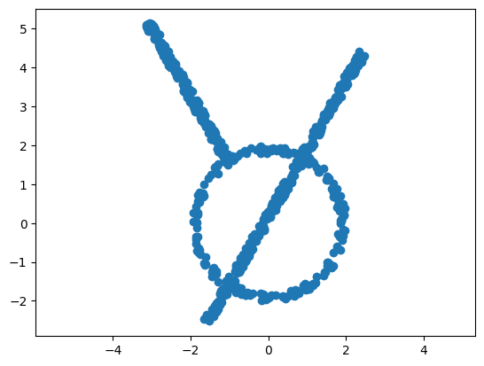
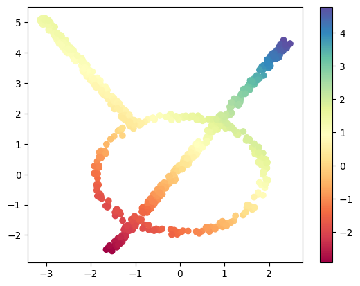
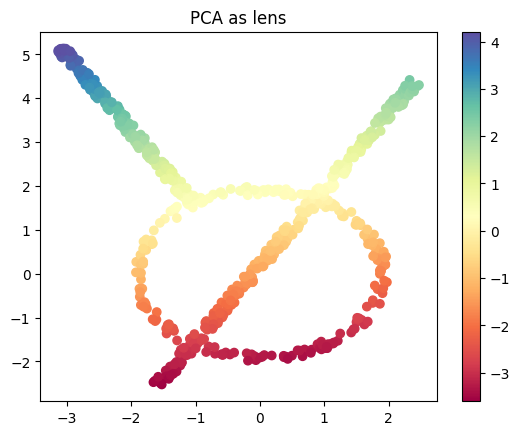
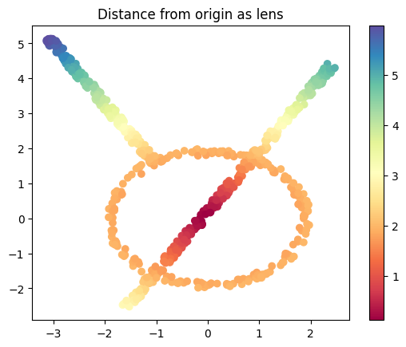
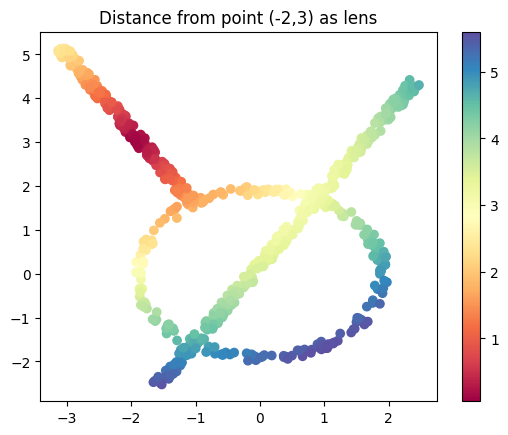
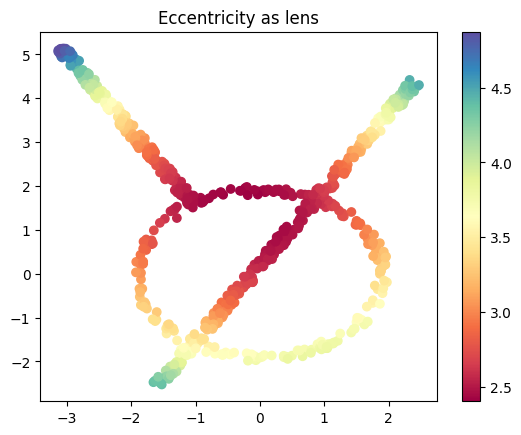
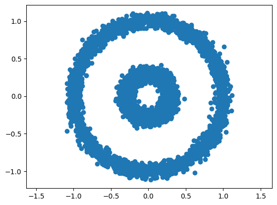

Lecture 19: Mapper graphs in Python#
In this notebook, we will run through basic examples of constructing mapper graphs using the KeplerMapper from scikit-tda. If not already installed, uncomment and run the following cell.
# pip install kmapper
# Imports
import numpy as np
import sklearn
from sklearn import datasets
import matplotlib.pyplot as plt
import kmapper as km
Credits#
This notebook was modified by Liz Munch from a previous version written by Sourabh Palande.
Mapper definition#
We can think of mapper as a two-step soft clustering method, guided by a real-valued function (called a lens or a filter function) on the data. We use this lens to divide our data into smaller overlapping chunks (called cubes in kmapper) where a data point may fall into two or more chunks.
This part of the process is called creating a cover.
Let \(\mathbb{X}\) be the point cloud and \(f : \mathbb{X} \to \mathbb{R}\) be the lens. We divide the range of \(f\) into overlapping intervals to create a cover \(\mathcal{U} = \{U_{\alpha}\}\). This, in turn, allows us to compute \(f^{-1}(\mathcal{U}) = \{f^{-1}(U_{\alpha})\}\), which is a cover of \(\mathbb{X}\) (called a pullback cover).
Once we have a cover of \(\mathbb{X}\), we apply our favorite clustering algorithm to each cover element separately. Then, we construct a graph where each node of the graph corresponds to a cluster from the clustering step. Lastly, if two clusters share the same data point(s), we connect the corresponding vertices of the graph by an edge.
The example we used in class is below.

Mapper of a toy dataset#
Here, we will create and visualize a simple dataset with 700 points.
Download the data here: MapperExampleCloud.txt
data = np.loadtxt('MapperExampleCloud.txt')
# Visualize sample data with a scatter plot
plt.scatter(data[:, 0], data[:, 1]);
plt.axis('equal');

Initialize mapper object#
Now we will create a mapper graph for this toy dataset. The first step is to initialize a KeplerMapper object.
# Initialize mapper object
# Set verbose = 0 to suppress output messages below
mapper = km.KeplerMapper(verbose=1)
KeplerMapper(verbose=1)
Define lens / filter function#
Next, we will need to define a lens function, which is any function \(f:P \to \R\) that gives a real number for each input data point. In practice, you just need an array of \(n\) numbers, one for each of the \(n\) data points in \(P\). It is possible that your data comes with a lens function grounded in the domain from which it was obtained. However, if not, below are a few examples of lens functions that can be computed just given input data.
Projection#
First, we have the projection in some direction. In this case, we have the following code.
theta = np.pi / 4 # 45 degree angle
w = (np.cos(theta), np.sin(theta)) # direction vector
# define a lens/filter function/projection by an inner product with w
lens_project = data @ np.array(w) # projection lens
Here we will draw the points with the filter function shown as color.
plt.scatter(data[:, 0], data[:, 1], c=lens_project, cmap='Spectral');
plt.colorbar();

Try this: Mess with the theta above, how does this change the lens function?
PCA as lens function#
As another option, we have the PCA projection as a lens function.
from sklearn.decomposition import PCA
lens_PCA = PCA(n_components=1).fit_transform(data)
plt.scatter(data[:, 0], data[:, 1], c=lens_PCA, cmap='Spectral');
plt.title('PCA as lens')
plt.colorbar();

Norm#
We can do the norm of each data point, which is simply the distance of the point from 0.
from numpy.linalg import norm
lens_norm = norm(data, axis=1, keepdims=True)
plt.scatter(data[:, 0], data[:, 1], c=lens_norm, cmap='Spectral');
plt.title('Distance from origin as lens')
plt.colorbar();

I’ll make a modified version too which gives me the distance from the point \((-2,3)\)
base_pt = (-2,3)
lens_norm2 = norm(data-base_pt, axis=1, keepdims=True)
plt.scatter(data[:, 0], data[:, 1], c=lens_norm2, cmap='Spectral');
plt.title('Distance from point (-2,3) as lens')
plt.colorbar();

Eccentricity#
We can define the eccentricity of the points like we did in class.
from scipy.spatial.distance import cdist
# Compute the pairwise distance matrix
D = cdist(data, data)
# Eccentricity (p=1 from the equation in class) is the mean distance to all other points
eccentricity = D.mean(axis=1)
plt.scatter(data[:, 0], data[:, 1], c=eccentricity, cmap='Spectral')
plt.title('Eccentricity as lens')
plt.colorbar();

Define cover#
Next step is to define the cover. To do so, we will split the range of the lens function into specified number of intervals (n_cubes). Where the size of overlap between consecutive intervals is given as a percentage of interval length (perc_overlap). For example, if the range of the lens is (0-100) and we specify n_cube = 2 and perc_overlap = 0.1, respectively, then the two intervals we get are [0, 60) and [50-100).
cover = km.Cover(n_cubes=10, perc_overlap=0.3)
With Keppler Mapper Once the cover is defined, mapper will split the data so that all the data points that map to the same interval are put into the same chunk. Since the intervals overlap, there would be points that map to more than one interval and hence, belong to more than one chunk.
# Initialize cover
# Note that we want perc_overlap <= .5
cover = km.Cover(n_cubes=10, perc_overlap=0.3)
Specify clustering algorithm#
Next, we want to apply clustering to each chunk. So we specify our favorite clustering algorithm. The default algorithm used by mapper is DBSCAN, but we can use any clustering algorithm or indeed write our own if needed. However, one poor choice is kNN since you need to specify the number of clusters in advance (but our whole idea here is that we want the clustering algorithm to figure that out for us). More options for clustering algorithms can be found in scikit-learn’s cluster module is used.
# Initialize clustering algorithm
from sklearn.cluster import DBSCAN
clust_metric = 'euclidean'
clusterer = DBSCAN(metric=clust_metric)
Construct mapper graph#
Now, we have all the ingredients to construct the mapper graph. We use the .map method of the KepplerMapper object we made a while ago to construct the graph.
# Create mapper graph: a dictionary with nodes, edges and meta-information
graph = mapper.map(lens=lens_project, X=data, cover=cover, clusterer=clusterer)
Mapping on data shaped (700, 2) using lens shaped (700,)
Creating 10 hypercubes.
Created 18 edges and 17 nodes in 0:00:00.009559.
Visualize the mapper graph#
Lastly, we will use the visualize method of KepplerMapper object to create a visualization and save it in an html file. There are other ways to create visualizations, we can export the graph to a standard graph package like networkx or igraph. But the html version is very convenient. We will create the html file and then load it into a frame below. Click on the link that shows up to see your output.
# # Visualize the created graph
# from helper_functions import colorscale_from_matplotlib_cmap
# cscale = colorscale_from_matplotlib_cmap(plt.get_cmap('coolwarm'))
_ = mapper.visualize(graph,
path_html="./example_mapper.html",
title="make_circles(n_samples=5000, noise=0.03, factor=0.3)",
color_values=lens_project,
color_function_name='labels'
)
Wrote visualization to: ./example_mapper.html
In the visualization, you can zoom in and out on parts of the graph.
Click on the + sign in from of cluster details to open a panel on the left. When you hover over a node in the graph, this panel will display information about the cluster.
Click on the + sign in from of mapper summary to open a panel on the right. This panel shows the parameters used to construct the mapper graph.
Your turn#
Now you have all the tools to build mapper graphs!
Test changing parameters on this data set#
Do the following.
For each of the lens functions above, recompute the mapper graph. What changes for the different options?
Pick on lens function you like (I’m always a fan of the projection for interpretability). Try using a different number of cover intervals, from 2 to 30. How does this affect the graph?
Now try fixing the lens function and number of cover intervals, but change the percentage overlap, from 10 to 50%. What changes here?
# your code here
Different data sets#
Load the circle data set from sklearn below.
# Load sample data
data, _ = datasets.make_circles(n_samples=5000, noise=0.05, factor=0.3)
plt.scatter(data[:, 0], data[:, 1])
plt.axis('equal');

Do this:
How do the different lens functions look on this data set?
Which do you expect to have a mapper graph that is (approximately) two circles? Which do you expect not to look like two circles?
Test your guess above by computing the mapper graphs of these lens functions.
# Your code here